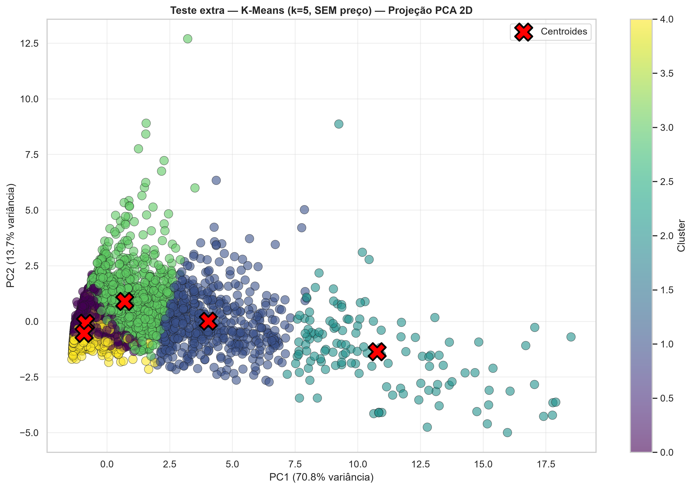
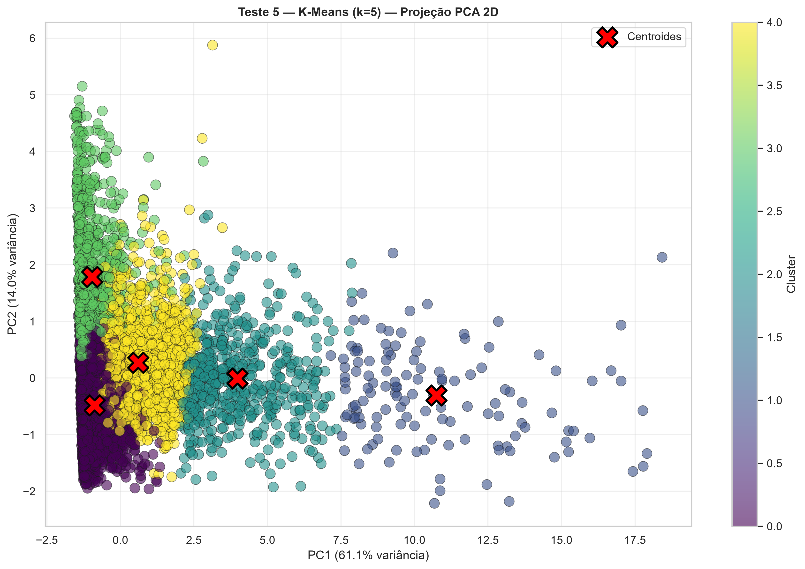
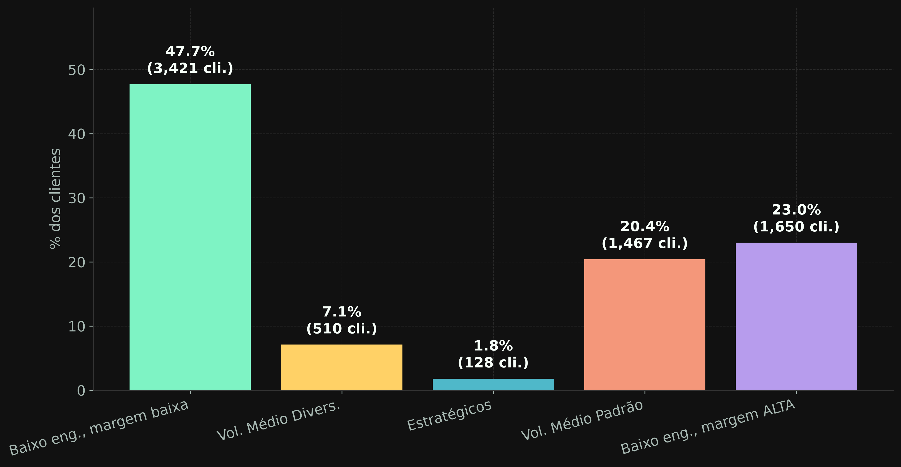
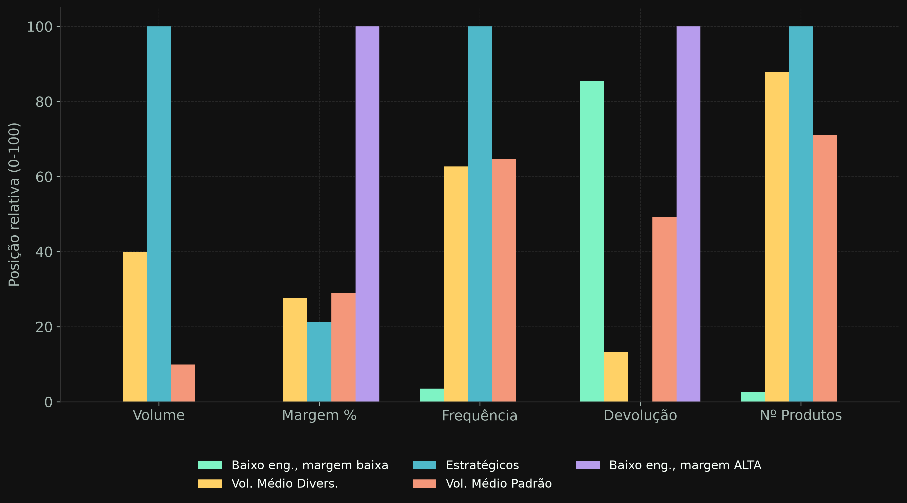
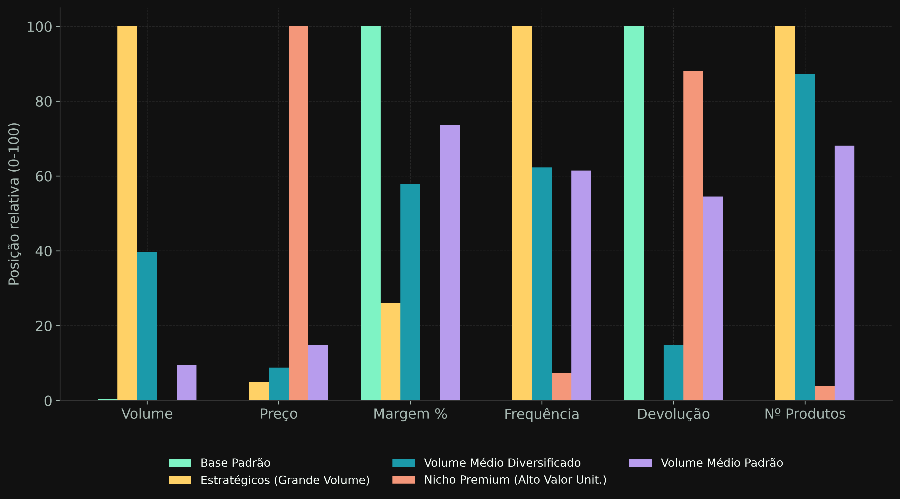
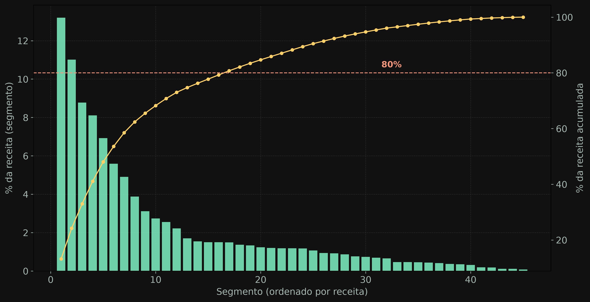
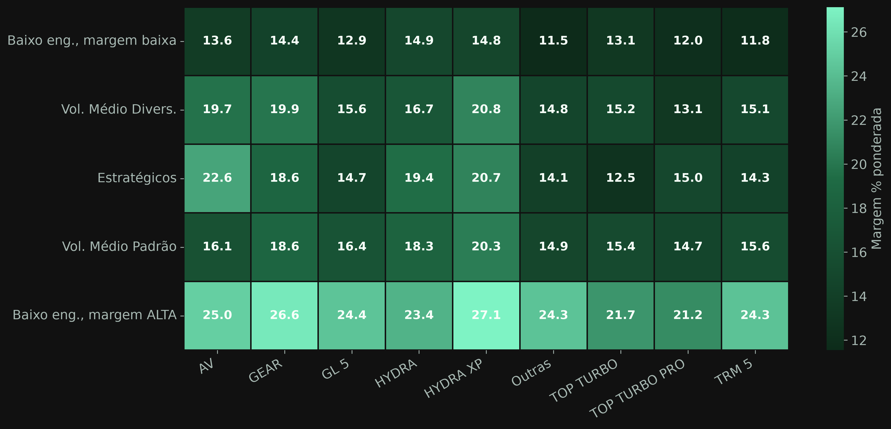
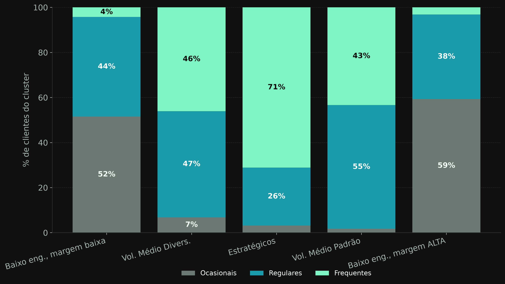
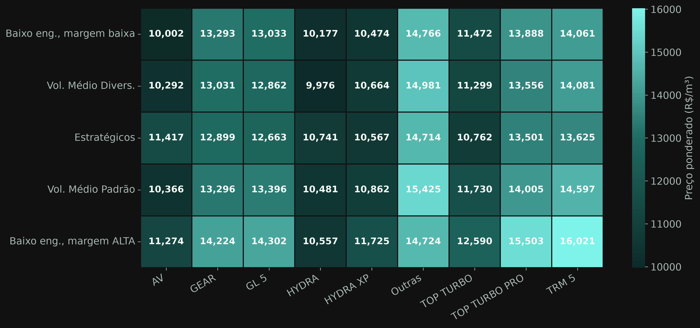
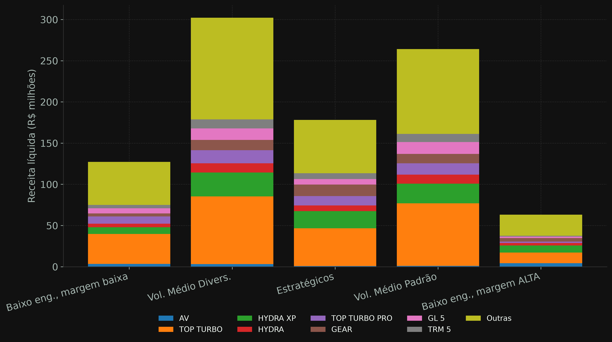

Diagnóstico complementar · K-Means Vibra Lubrax
Mapa dos Modelos — Impacto do Preço na Segmentação
Este não é um dos 5 testes oficiais do relatório técnico — é um diagnóstico pontual
para responder a uma pergunta específica: a segmentação final (Teste 5) depende de usar
preco_liquido_ponderado como feature, ou os mesmos clusters apareceriam sem ele? Cada aba
abaixo mostra a mesma análise do relatório técnico, lado a lado, para os dois modelos.
preco_liquido_ponderadoResumo — A (sem preço) vs B (com preço)
Mesmos 7.176 clientes, mesma metodologia (RobustScaler + KMeans, k=5, random_state=42, n_init=20) — só muda o vetor de features.
Modelo A — perfil dos clusters
| Cluster | Clientes | % | Volume (m³) | Preço (R$/m³) | Margem % | Freq/mês | Produtos |
|---|---|---|---|---|---|---|---|
| 0 — Baixo engajamento, margem baixa | 3.421 | 47,7% | 2,90 | 13.286 | 12,5% | 1,74 | 4,2 |
| 1 — Vol. Médio Diversificado | 510 | 7,1% | 46,4 | 12.811 | 15,6% | 3,74 | 17,4 |
| 2 — Estratégicos | 128 | 1,8% | 111,8 | 12.452 | 14,9% | 5,00 | 19,3 |
| 3 — Vol. Médio Padrão | 1.467 | 20,4% | 13,7 | 13.242 | 15,8% | 3,81 | 14,9 |
| 4 — Baixo engajamento, margem ALTA | 1.650 | 23,0% | 2,88 | 13.269 | 24,0% | 1,63 | 3,8 |
Modelo B — perfil dos clusters (oficial)
| Cluster | Clientes | % | Volume (m³) | Preço (R$/m³) | Margem % | Freq/mês | Produtos |
|---|---|---|---|---|---|---|---|
| 0 — Base Padrão | 4.071 | 56,7% | 2,91 | 12.149 | 16,5% | 1,64 | 3,8 |
| 1 — Estratégicos (Grande Volume) | 129 | 1,8% | 111,5 | 12.471 | 15,0% | 5,01 | 19,5 |
| 2 — Vol. Médio Diversificado | 525 | 7,3% | 45,8 | 12.731 | 15,7% | 3,74 | 17,5 |
| 3 — Nicho Premium (Alto Valor) | 883 | 12,3% | 2,57 | 18.760 | 14,4% | 1,89 | 4,5 |
| 4 — Vol. Médio Padrão | 1.568 | 21,9% | 12,9 | 13.127 | 16,0% | 3,71 | 14,5 |
Para onde foram os clientes de cada cluster do modelo B (linhas), no modelo A (colunas)
| Cluster (com preço) | → A0 (baixo eng., margem baixa) | → A1 (Vol.Méd.Divers.) | → A2 (Estratégicos) | → A3 (Vol.Méd.Padrão) | → A4 (baixo eng., margem ALTA) |
|---|---|---|---|---|---|
| 0 — Base Padrão (4.071) | 2.673 (65,7%) | 0 | 0 | 17 (0,4%) | 1.381 (33,9%) |
| 1 — Estratégicos (129) | 0 | 1 (0,8%) | 128 (99,2%) | 0 | 0 |
| 2 — Vol. Médio Divers. (525) | 0 | 507 (96,6%) | 0 | 17 (3,2%) | 1 (0,2%) |
| 3 — Nicho Premium (883) | 632 (71,6%) | 2 (0,2%) | 0 | 55 (6,2%) | 194 (22,0%) |
| 4 — Vol. Médio Padrão (1.568) | 116 (7,4%) | 0 | 0 | 1.378 (87,9%) | 74 (4,7%) |
Projeção PCA 2D
A — sem preço (84,5% da variância explicada)

B — com preço, oficial (75,2% da variância explicada)

Distribuição de clientes por cluster
Equivalente à fig2 do relatório técnico — % de clientes e contagem em cada cluster.
A — sem preço

B — com preço (oficial)

Perfil normalizado dos clusters
Equivalente à fig3 — posição relativa (0-100) de cada feature, por cluster. O Modelo A mostra só as 5 features que ele realmente usou para treinar (preço fica de fora); o Modelo B mostra as 6 — os valores reais de preço de cada cluster estão na aba Resumo.
A — sem preço

B — com preço (oficial)

Concentração de receita por segmento (cluster × família)
Equivalente à fig5 — A tem 17 de 45 segmentos cobrindo 80% da receita; B tem 16 de 45. Praticamente igual — a concentração de receita não depende muito de como os clusters de baixo volume se reorganizam.
A — sem preço (17/45 segmentos = 80%)

B — com preço, oficial (16/45 segmentos = 80%)

Margem % ponderada — cluster × família
Equivalente à fig6. No Modelo A, repare como a linha "Baixo eng., margem ALTA" salta aos olhos (verde claro em quase toda a linha) — é o grupo que substitui o Nicho Premium quando não se usa preço.
A — sem preço

B — com preço (oficial)

Ranking de famílias de produto por volume
Equivalente à fig7. Esta análise não depende do modelo de clusterização — é o mesmo ranking de famílias (por volume total da base inteira) usado como referência nos dois modelos. Por isso aparece só uma vez aqui, em vez de A vs B.

Composição de frequência de compra por cluster
Equivalente à fig8 — % de clientes Ocasionais / Regulares / Frequentes dentro de cada cluster.
A — sem preço

B — com preço (oficial)

Preço médio ponderado por volume — cluster × família
Equivalente à fig10. No Modelo B repare a célula muito clara (Nicho Premium × Outras, R$ 21.153/m³) — não tem equivalente tão destacado no Modelo A.
A — sem preço

B — com preço (oficial)

Receita líquida por família, dentro de cada cluster
Equivalente à fig11 — mostra se a concentração em poucas famílias se repete dentro de cada cluster.
A — sem preço

B — com preço (oficial)